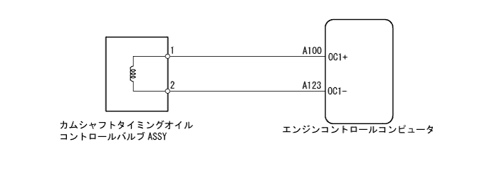
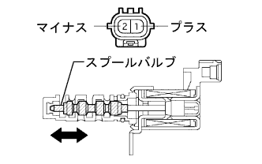
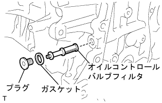

DTC P0011/59 VVT Control (Advance Malfunction) |
DTC P0012/59 VVT Control (Retard Malfunction) |

| DTCNo. SAE/TCCS | DTC Detection Conditions 1. Diagnosis conditions 2. Malfunction status 3. Malfunction duration 4. Other | Inspection Area |
|---|---|---|
| P0011/59 |
|
|
| P0012/59 |
|
|

| Step 1 | Clear DTC |
Connect SST (TaSCAN) to DLC3.
Turn the IG ON and clear the DTCs following the SST (TaSCAN) screen display. (see)
| NEXT | |
| Step 2 | Read DTC |
Perform a road test.
Check the DTCs by following the SST (TaSCAN) screen display. (see)
| Result | Proceed to |
|---|---|
| Either P0011 or P0012 is output | A |
| Codes other than P0011 and P0012 are also output | B |
|
| ||||
| A | |
| Step 3 | Check for Rough Idle or Engine Stall |
Check the engine idle condition.
| Vehicle Condition | Proceed to |
|---|---|
| Engine stalls or idles roughly | A |
| Normal idle speed | B |
|
| ||||
| A | |
| Step 4 | Inspect Valve Timing |
Timing Inspection
Remove the cylinder head cover.
Turn the crankshaft clockwise and align the notch of the crankshaft pulley with the 0° position.
 |
As shown in the illustration, check that the timing marks of the camshaft timing gears are aligned. If the marks are not aligned, turn the crankshaft clockwise 1 more revolution.
| Result | Proceed to |
|---|---|
| Timing marks are not aligned | A |
| Timing marks are aligned | B |
|
| ||||
| A | ||
| ||
| Step 5 | Perform TaSCAN Active Test (VVT Control) |
Connect SST (TaSCAN) to DLC3.
With the engine stopped, turn the IG ON.
Following the SST (TaSCAN) screen display, select [Active Test] - [VVT Control].
With the engine idling, perform [OFF/ON].
| Performed (OCV operates) | Engine stalls or idles roughly |
| Not performed (OCV does not operate) | Normal idle speed |
|
| ||||
| OK | ||
| ||
| Step 6 | Inspect Camshaft Timing Oil Control Valve Assembly |
 |
Resistance Inspection
Using SST (Toyota electrical tester), measure the resistance between the terminals.
| Tester Connection | Condition | Standard |
|---|---|---|
| 1 - 2 | Approx. 20°C | 6.9 to 7.9Ω |
Operation Check
Apply battery voltage between the terminals and inspect the spool valve condition.
| Tester Connection | Condition | Specified Condition |
|---|---|---|
| 1 - 2 | Battery voltage | Valve operates |
|
| ||||
| OK | |
| Step 7 | Inspect Valve Timing |
Timing Inspection
Remove the cylinder head cover.
Turn the crankshaft clockwise and align the notch of the crankshaft pulley with the 0° position.
|
As shown in the illustration, check that the timing marks of the camshaft timing gears are aligned. If the marks are not aligned, turn the crankshaft clockwise 1 more revolution.
|
| ||||
| OK | |
| Step 8 | Inspect Oil Control Valve Filter |
 |
Using a socket hexagon wrench, remove the plug at the position shown in the illustration, and remove the oil control valve filter.
Check the oil control valve filter for clogging.
|
| ||||
| OK | |
| Step 9 | Clear DTC |
Connect SST (TaSCAN) to DLC3.
Turn the IG ON and clear the DTCs following the SST (TaSCAN) screen display. (see)
| NEXT | |
| Step 10 | Read DTC |
Perform a road test.
Check the DTCs by following the SST (TaSCAN) screen display. (see)
| Result | Proceed to |
|---|---|
| Either P0011 or P0012 is output | A |
| No output | B |
)
|
| ||||
| A | ||
| ||